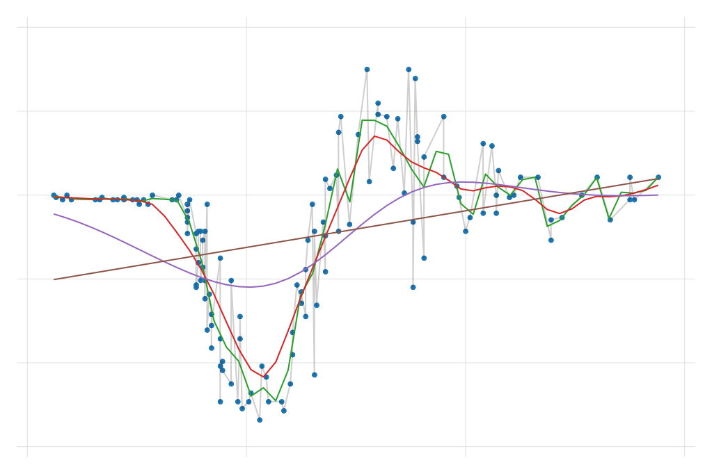

Semi- and Non- Parametric regression
How flexible is flexible enough?
Introduction
What exactly do we mean with non parametric??
First of all, everything we have done in the last class, concerned to the analysis of parametric relationships between \(y\) and \(X's\) .
Why parametric? Because we assume that the relationship between those variables is linear, so we just need to estimate the parameters of that relationship. (\(\beta's\)). Even tho the CEF was on itself non-parametric.
This was just a matter of convince. Instead of trying to estimate all possible conditional means (impossible task?) we impose functional form conditions, to identify the relationship of interest.
When we covered MLE (last semester) we even imposed functional forms assumptions on relationships and distribution!
So what about non-parametric?
Non-parametric is on the other side of the spectrum. There are no “single” parameters to estimate, but rather it tries to be as flexible as possible, to identify all possible relationships in the data.
In terms of distributions, it no longer assumes data distributes as normal, poisson, exponential, etc. Instead, it simply assumes it distributes, however it does. ü§î But isnt that a problem?
Yes it can be.
On the one hand Parametric modeling is very “strict” regarding functional forms. (linear quadratic, logs, etc).
On the other, Non-parametric can be too flexible. Making the problem almost impossible to solve.
However, the benefits of letting your data “speak” for itself, would allow you to avoid some problems with parametric models. At least is some balance can be set on the “flexibility”
Ok but what about Semi-parametric!
Semi-parametric models try to establish a mid point between parametric and non-parametric models, attempting to draw from the benefit of both.
- It also helps that it has a smaller computational burden (we will see what do i mean with this.
What about an example? Say we are trying to explain “wages” as a function of age and education. (assume exogeneity)
Theoretical framework : \[wage = g(age, education, \varepsilon) \]
Parametric model: \[wage = b_0 + b_1 age + b_2 education +\varepsilon \]
Non-parametric model: \[ wage = g(age,education) +\varepsilon \]
Semi-parametric model:
\[wage = b_0 + g_1(age) + g_2(education) +\varepsilon \\ wage = g_0(age)+b1 education+\varepsilon \\ wage = g_0(age)+g_1 (age)education+\varepsilon \]
Step1: Estimation of Density functions
The first step towards learning non-parmetric analysis, is by learning to use the most basic task of all.
Estimating distributions (PDFs) : why? in economics, and other social sciences, we care about distributions!
Distribution of income, how many live under poverty, how much is concentrated among the rich, how skew the distribution is, what is the level of inequality, etc, etc
The parametric approach to estimating distribution, is by using some predefined functional form (say normal), and use the data to estimate the parameters that define that distribution:
\[ \hat f(x) = \frac{1}{\sqrt{2\pi\hat\sigma^2}}exp \left(-\frac{1}{2}\left(\frac{x-\hat \mu}{\hat \sigma}\right)^2 \right) \]
- Which can be done rather easy in
Stata
frause oaxaca, clear
drop if lnwage==.
sum lnwage
gen f = normalden(lnwage, r(mean), r(sd))
histogram wagesBut as you can see, it does not fit well.
Histogram and Kernel Density
Histograms and Kernel densities (you probably have used a lot) are a type of non-parametric estimators, because they impose no functional form restrictions to estimate probability density functions (PDFs).
Construction histograms, is in fact, a fairly Straight forward task:
- You select the width of bins, \(h\) , and starting value \(x_0\)
\[if \ x_i \in [x_0 + m * h, x_0 + (m+1)h ) \rightarrow bin(x)=m+1 \]
- And the Histogram estimator for density, is given by:
\[\hat f (x) = \frac{1}{nh} \sum_i 1(bin(x)=bin(x_i)) \]
Simple yet powerful approach to estimate and visualize distributions. But with lots of room for improvement. It may provide very different pictures based on “h”
Histograms with Varying h

Kernel density
An alternative that overcomes some of the limitations of the Histogram is known as the kernel density estimator. This is defined as:
\[ \hat f(x) = \frac{1}{nh}\sum_i K\left(\frac{X_i-x}{h}\right) \]
where \(K\) is what is known as a kernel function.
This function is such that has the following properties:
\[ \int K(z)dz = 1 ; \int zK(z)dz = 0 ; \int z^2K(z)dz < \infty \]
Is a well behaved pdf on its own, that is symmetric, with defined second moment.
as with the histogram estimator, the Kden is just an average of functions, that has the advantage of being smooth.
Although it also depends strongly, on the choice of bandwidth.
Kernel density: Visualization
Trade off: Bias vs variance
While this estimators are “flexible” in the sense that we impose very simple assumptions for estimation, there is still one parameter that needs attention.
The bandwidth \(h\)
This does not (or cannot) be estimated, rather, needs to be calibrated to balance two problems in Non-parametric analysis. Bias vs Variance:
when \(h\rightarrow 0\) , the bias of your estimator goes to zero ( in average). Intuitively \(\hat f(x)\) is constructed based on information that comes from \(x\) alone.
But the variance increases! Because things will vary for every \(x\).
when \(h \rightarrow \infty\) , the bias increases, because you start using data that is very different to \(x\) to estimate \(\hat f(x)\).
But variance decreases. Since the “function” is now very smooth (a line?)
Thus, special attention is needed to choose the right h, which minimizes the problems (bias and variance).
Kdensity, Bias vs Variance
Other Considerations
- As shown above, one needs to choose the bandwidth \(h\) carefully, balancing the bias-variance trade off. Common approach is to simply use rule-of-thumb approaches to select this parameter:
\[ h = 1.059 \sigma n ^ {-1/5} \\ h = 1.3643 * d * n ^ {-1/5} * min(\sigma,iqr\sigma) \]
But other approaches may work better.
- A second consideration is the choice of Kernel function! (
see help kdensity -> kernel)- Although, except in few cases, the choice of bandwidth matters more than the kernel function.
- This method works well when your data is smooth and continuous. But for so much for discrete data.
- Nevertheless, it is still possible to use it with discrete data, and kernel weights!
- Can be “easily” extended to multiple dimensions \(f(x,y,z,...)\), including mixture of continuous and discrete data. You just multiple Kernels!
- But, beware of Curse of dimensionality.
- But still better than just Subsampling!
Kfunctions
Non-parametric Regression
NP - Regression
As hinted from the beginning, the idea of non-parametric regressions is related to estimate a model that is as flexible as it can probably be.
This relates to the CEF, where we want to estimate a conditional mean for every combination of X’s. In other words, you aim to estimate models that are valid “locally”. A very difficult task.
- You have a limited sample size
- You may not see all possible X’s combinations
- and for some, you may have micro-samples (n=1) Can you really do something with this?
Yes, make your model flexible, but not overly flexible! but how?
- Kernel regression ; Spline regression
- Polynomial regression; Smoothed Spline regression.
Univariate case
- Consider a univariate case \(y,X\) where you only have 1 indep variable, which are related as follows:
\[ y = m(x) + e \]
which imposes the simplifying assumption that error is additive.
- In the parametric case:
\[ y =b_0 + b_1 x + b_2 x^2 +b_3 x^3 +...+e \]
(this is, in fact, starting to become less parametric)
- But in the full (unconstrained) model it would just be (simple conditional mean:
\[ E(y|X) = \hat m(x) = \frac{\sum y_i 1(x_i=x)}{\sum 1(x_i=x)} \]
Problems? Impossible to do out out sample predictions, and if \(n<42\) inference would be extremely unreliable.
Local Constant Regression
We can improve over the Unconstrained mean using the following connection:
\(1(x_i=x)\) is a non smooth indicator that shows if an observation is included (counted towards the mean).
It can be substituted with \(K_h(x_i,x)\), which is the standardized kernel function. (ie \(K_h(x_i,x) = \frac{1}{h} K(\frac{x_i-x}{h})\)
Depending on \(h\) , it gives the most weight the closer \(x_i\) is to \(x\).
This gives what is known as the Nadaraya-Watson or Local constant estimator:
\[ \hat m(x) = \frac{\sum y_i K_h(x_i,x)}{\sum K_h(x_i,x)} = \sum y_i w_i \]
Which, on its core, is simply a weighted regression, with weights given by \(\frac{K_h(x_i,x)}{\sum K_h(x_i,x)}\)
- Kernel Regressions “borrows” info from neighboring observations to obtain a smooth estimator.
Visuals
Considerations
- Local Constant estimator is simple to estimate with a single variable. And so with multiple variables:
\[ \hat m(x,z) = \frac{\sum y_i K_h(x_i,x) \times K_h(z_i,z)}{\sum K_h(x_i,x) \times K_h(z_i,z)} \]
The problem, however, lies on the curse of dimensionality. - More dimensions, less data per \((x,z)\) point, unless you “increase” bandwidths.
As Before, it all depends on the Bandwidth \(h\).It determines the “flexibility” of the model.
The local constant tends to have considerable bias (specially near limits of the distribution, or when \(g\) has too much curvature)
Choosing h
The quality of the NPK regression depends strongly on the choice of \(h\). And as with density estimation, the choice translates into a tradeoff between bias and variance of the estimation.
There are various approaches to choose \(h\). Some which depend strongly on the dimensionality of the model.
For Example, Stata command lpoly estimates local constant models, using the following:
But that is not the only approach.
An alternative (used for regularization) is using Cross-Validaton. (a method to evaluate the predictive power of a model)
Cross Validation: Intuition
Separate your data in two parts: Training and testing Sample.
Estimate your model in the TrainS, and evaluate predictive power in TestS.
To obtain a full view of predictive power, Repeat the process rotating the training set
\[ mse = \frac{1}{N}\sum(y_i - g_{-k}(x))^2 \]
This should give you a better idea of the predictive power of the model.

Cross-validation in Stata
frause oaxaca, clear
ssc isntall cv_kfold
qui:reg lnwage educ exper tenure female age
cv_kfold
k-fold Cross validation
Number of Folds : 5
Number of Repetions : 1
Avg Root Mean SE : 0.45838
qui:reg lnwage c.(educ exper tenure female age)
##c.(educ exper tenure female age)
cv_kfold
k-fold Cross validation
Number of Folds : 5
Number of Repetions : 1
Avg Root Mean SE : 0.42768
. qui:reg lnwage c.(educ exper tenure female age)
##c.(educ exper tenure female age)
##c.(educ exper tenure female age)
. cv_kfold
k-fold Cross validation
Number of Folds : 5
Number of Repetions : 1
Avg Root Mean SE : 0.43038
ssc install cv_regress
* Does lOOCV for regression
cv_regress
Leave-One-Out Cross-Validation Results
-----------------------------------------
Method | Value
-------------------------+---------------
Root Mean Squared Errors | 0.4244
Log Mean Squared Errors | -1.7144
Mean Absolute Errors | 0.2895
Pseudo-R2 | 0.36344
-----------------------------------------LOOCV
Because the “choice” of “folds” and Repetitions, and the randomness, may produce different results every-time, one also has the option of using the “leave-one-out” approach.
This means, leave one observation out, and use the rest to make the predictions.
\[ CV(h) = n^{-1}\sum_{i=1}^n(y_i - \hat g_{-i}(x_i))^2 \]
This is not as bad as it looks, since we can use the shortcut
\[ CV(h) = n^{-1}\sum_{i=1}^n\left(\frac{y_i - \hat g(x_i)}{1-w_i/\Sigma w_j}\right)^2 \]
In Stata, the command npregress kernel uses this type of cross-validation to determine “optimal” \(h\)
Extending from constant to Polynomial
An alternative way to understanding the simple NW (local constant) regressions, is to understand it as a local regression model with anything but a constant:
\[ \hat m(x)=min\sum(y_i - \beta_0)^2 w(x,h)_i \]
This means that you could extend the analogy and include “centered” polynomials to the model.
\[ \begin{aligned} min &\sum(y_i - \beta_0 - \beta_1 (x_i -x) -\beta_2 (x_i - x) ^2 - ...-\beta_k(x_i-x)^k)^2 w(x,h)_i \\ \hat m(x) &= \hat \beta_0 \end{aligned} \]
This is called the local polynomial regression.
Because its more flexible, it shows less bias when the true function shows a lot of variation.
Because of added polynomials, it requires more information (larger \(h\))
It can be used to easily obtain local marginal effects.
And can also be used with multinomial models (local planes)
\[min \sum (y_i - \beta_0 - \beta_1 (x_i-x) - \beta_2 (z_i-z))^2 w(x,z,h) \]
Local Constant to Local Polynomial
webuse motorcycle
two scatter accel time || ///
lpoly accel time , degree(0) n(100) || ///
lpoly accel time , degree(1) n(100) || ///
lpoly accel time , degree(2) n(100) || ///
lpoly accel time , degree(3) n(100) , ///
legend(order(2 "LConstant" 3 "Local Linear" ///
4 "Local Cubic" 5 "Local Quartic"))
Statistical Inference
For Statistical Inference, since each regression is just a linear model, standard errors can be obtained using the criteria as in Lecture 1. (Robust, Clustered, bootstrapped).
- With perhaps one caveat. Local estimation and standard errors may need to be estimated “globally”, rather than locally.
The estimation of marginal effects becomes a bit more problematic.
Local marginal effects are straightforward (when local linear or higher local polynomial is used)
Global marginal effects, can be obtained averaging all local marginal effects.
However, asymptotic standard errors are difficult to obtain (consider the multiple correlated components), but bootstrapping is still possible.
Stata Example
frause oaxaca
npregress kernel lnwage age exper
Computing mean function
Minimizing cross-validation function:
Iteration 0: Cross-validation criterion = -1.5904753
Iteration 1: Cross-validation criterion = -1.5906158
Iteration 2: Cross-validation criterion = -1.5907243
Iteration 3: Cross-validation criterion = -1.5911389
Iteration 4: Cross-validation criterion = -1.5911389
Iteration 5: Cross-validation criterion = -1.5911855
Iteration 6: Cross-validation criterion = -1.5912075
Computing optimal derivative bandwidth
Iteration 0: Cross-validation criterion = .01378252
Iteration 1: Cross-validation criterion = .0019967
Iteration 2: Cross-validation criterion = .00196967
Iteration 3: Cross-validation criterion = .00196371
Bandwidth
------------------------------------
| Mean Effect
-------------+----------------------
age | 2.843778 15.10978
exper | 3.113587 16.54335
------------------------------------
Local-linear regression Number of obs = 1,434
Kernel : epanechnikov E(Kernel obs) = 1,434
Bandwidth: cross-validation R-squared = 0.3099
------------------------------------------------------------------------------
lnwage | Estimate
-------------+----------------------------------------------------------------
Mean |
lnwage | 3.339269
-------------+----------------------------------------------------------------
Effect |
age | .0169326
exper | -.0010196
------------------------------------------------------------------------------
Note: Effect estimates are averages of derivatives.
Note: You may compute standard errors using vce(bootstrap) or reps().Other types of “non-parametric” models
We have explored the basic version of non-parametric modeling. But its not the only one.
There are at least two others that are easy to implement.
- Nonparametric Series Regression (we will see this)
- Smoothing series/splines: Which borrows from Series regression and Ridge Regression.
Non-parametric series
This approach assumes that model flexibility can achieve by using “basis” functions in combination with Interactions, but using “global” regressions (OLS)
But what are “basis” functions? They are a collection of terms that approximates smooth functions arbitrarily well.
\[ \begin{aligned} y &= m(x,z)+e \\ m(x,z) &= B(x)+ B(z)+B(x)*B(z) \\ B(x) &= (x, x^2, x^3,...) \\ B(x) & = fracPoly \\ B(x) &= (x, max(0,x-c_1), max(0,x-c_2), ... \\ B(x) &= (x,x^2,max(0,x-c_1)^2, max(0,x-c_2)^2, ... \\ B(x) &= B-splines \end{aligned} \]
Polynomials can be used, but there may be problems with high order polynomials. (Runge’s phenomenon,multiple-co-linearity). They are “global” estimators.
Fractional polynomials: More flexible than polynomials, without producing “waves” on the predictions
Natural Splines, are better at capturing smooth transitions (depending on degree). Require choosing Knots appropriately.
B-splines are similar to N-splines, but with better stat properties. Also require choosing knots
Except for correctly estimating the Bases functions (fracpoly and Bsplines are not straight forward), estimation requires simple OLS.
NP series - tuning
While NP-series are easy to estimate, we also need to address problems of over-fitting.
With Polynomial: What degree of polynomial is correct? What about the degree of the interactions?
Fractional Polynomials: How many terms are needed, what would their “degrees” be.
Nsplines, Bsplines: How to choose degree? and where to set the knots?
These questions are similar to the choosing \(h\) in kernel regressions. However, model choice is simple…Cross validation.
Estimate a model under different specifications (cut offs), and compare the out-of-sample predictive power. (
see Stata: cv_kfold or cv_regress)
One more problem left. Statistical Inference
NP series - SE and Mfx
Lecture 1 applies here. Once the model has been chosen, you can estimate SE using appropriate methods. There is only one caveat
- Standard SE estimation ignores the uncertainty of choosing cut-offs or polynomial degrees. In principle, cut-offs uncertainty can be modeled. But requires non-linear estimation.
Marginal effects are somewhat easier for some basis. Just take derivatives:
\[ y = b_0 + b_1 x + b_2 x^2 +b_3 max(0,x-c)^2 + e \\ \frac{dy}{dx}=b_1 + 2 b_2 x + 2 b_3 (x-c) 1(x>c) \]
- But keeping track of derivatives in a multivariate model is difficult, and often, the functions are hard to track down. so how to implement it?
NP series: Implementation marginal effects
As always, it all depends on how are the models estimated.
Statacommandnpregress seriesallows you to estimate this type of models using polynomials, splines and B-splines. And also allows estimates marginal effects for you. (can be slow)fpestimates fractional polynomials, but does not estimate marginal effects for you.Ris a bit more flexible in terms of tracking down functions as variables (~x+I(x*x)+ln(x)). So it may be “easy” to estimate those effects.In
Stata, you can use the packagef_ableto estimate those marginal effects, however. see here for details. andSSCfor the latest update.
frause oaxaca, clear
drop agesq
f_spline age = age, nk(1) degree(3)
f_spline exper = exper, nk(1) degree(3)
qui:regress lnwage c.(age*)##c.(exper*)
f_able age? exper?, auto
margins, dydx(age exper) noestimcheck
------------------------------------------------------------------------------
| Delta-method
| dy/dx std. err. z P>|z| [95% conf. interval]
-------------+----------------------------------------------------------------
age | .0360234 .0033909 10.62 0.000 .0293775 .0426694
exper | .0082594 .0050073 1.65 0.099 -.0015547 .0180735
------------------------------------------------------------------------------Semiparametric Regressions
Full non-parametric estimations are powerful to identify very flexible functional forms. To avoid overfitting, however, one must choose tuning parameters appropriately (\(h\) and \(cutoffs\) ).
A disadvantage: Curse of dimensionality. More variables need more data to provide good results. But, the more data you have, the more difficult to estimate (computing time).
It also becomes extremly difficult to interpret. (too much flexibility)
An alternative, Use the best of both worlds: Semiparametric regression
- Flexiblity when needed with the structure of standard regressions, to avoid the downfalls of fully nonparametric models
Partially Linear model
\[ y = x\beta +g(z) +e \]
This model assumes that only a smaller set of covariates need to be estimated non-parametrically in the model.
Estimators:
npregress series: Use BasisF to estimate \(g(z)\) . Or other series regressions, fractional polynomialfpYatchew 1997: For a single z, sort variables by it, and estimate: \(\Delta y=\Delta X\beta+ \Delta g(z) + \Delta e\). This works because \(\Delta g(z)\rightarrow 0\)
Estimate \(g(z)\) regressing \(y-x\hat \beta\) on \(z\). See plreg
Robinson 1988: Application of FWL. Estimate \(y = g_y(z)+e_y\) and \(x = g_x(z)+e_x\) and estimate \(\beta = (e_x ' e_x)^{-1} e_x ' e_y\) . For \(g(z)\) same as before. See semipar.
Other methods available see semi_stata
Generalized Additive model
\[ y = g(x) +g(z)+e \]
This model assumes the effect of X and Z (or any other variables) are additive separable, and may have a nonlinear effect on y.
npregress series: with non-interaction option. Fractional polynomialsmfp, cubic splinesmvrs(see mvrs) , or manual implementation.Kernel regression possible. (as in Robinson 1988), but requires an iterative method. (back fitting algorithm)
- \(g(x) = smooth (y-g(z)|x)\), center \(g(x)\) , and \(g(z) = smooth (y-g(x)|z)\), center \(g(z)\) until convergence
In general, it can be easy to apply, but extra work required for marginal effects.
Smooth Coefficient model
\[ y = g_0(z)+g_1(z)x + e \]
This model assumes that \(X's\) have a locally linear effect on $y$, but that effect varies across values of \(z\), in a non-parametric way.
fpor manual implementation of basis functions, with interaction. May allow for multiple variables in \(z\)One can also use Local Kernel regressions. locally weighted regression where All X variables are considered fixed, or interacted with polynomials of Z. Choice of bandwidth problematic, but doable (LOOCV).
vc_pack can estimate this models with a single z, as well as test it. Overall marginal effects still difficult to obtain.
Example
frause oaxaca
npregress kernel lnwage age exper
margins, dydx(*)
vc_bw lnwage educ exper tenure female married divorced, vcoeff(age)
vc_reg lnwage educ exper tenure female married divorced, vcoeff(age) k(20)
ssc install addplot
vc_graph educ exper tenure female married divorced, rarea
addplot grph1:, legend(off) title(Education)
addplot grph2:, legend(off) title(Experience)
addplot grph3:, legend(off) title(Tenure)
addplot grph4:, legend(off) title(Female)
addplot grph5:, legend(off) title(Married)
addplot grph6:, legend(off) title(Divorced)
graph combine grph1 grph2 grph3 grph4 grph5 grph6Example
Wage Profile across years